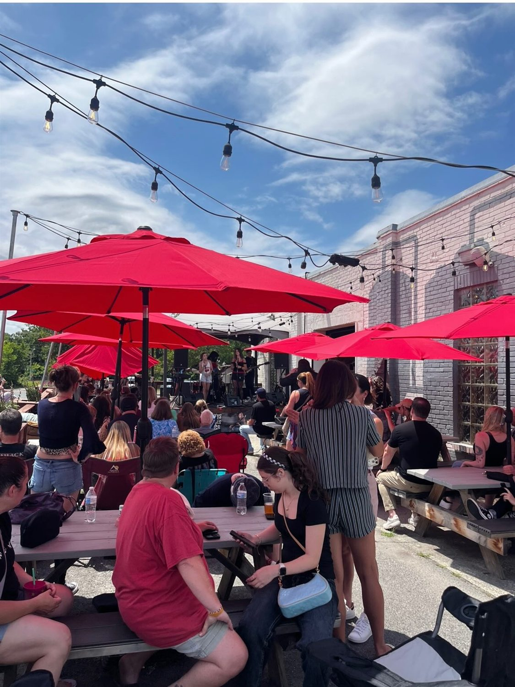

Live Band Showcases
Full electric rock bands, acoustic Americana singer-songwriters, and energetic country outfits perform on our outdoor stage every weekend.
The Southern Range beer garden is downtown Monroe's live entertainment epicenter. Join us under the red umbrellas for free live concerts by regional Carolina artists and grab dinner from the area’s top gourmet food trucks.

A weekly lineup of live music, food truck culinary pairings, and community events.
Full electric rock bands, acoustic Americana singer-songwriters, and energetic country outfits perform on our outdoor stage every weekend.
From Carolina pit barbecue and gourmet smashburgers to artisanal street tacos and wood-fired pizza, top regional food trucks pull right up to the patio.
Test your knowledge at weekly taproom trivia nights, bring your canine companion to dog adoption days, and browse local makers markets.

Are you a musical act or gourmet food truck operator interested in partnering with Southern Range Brewing? We book talent months in advance. Contact our taproom team directly to coordinate open dates.
Call (704) 289-4049 →